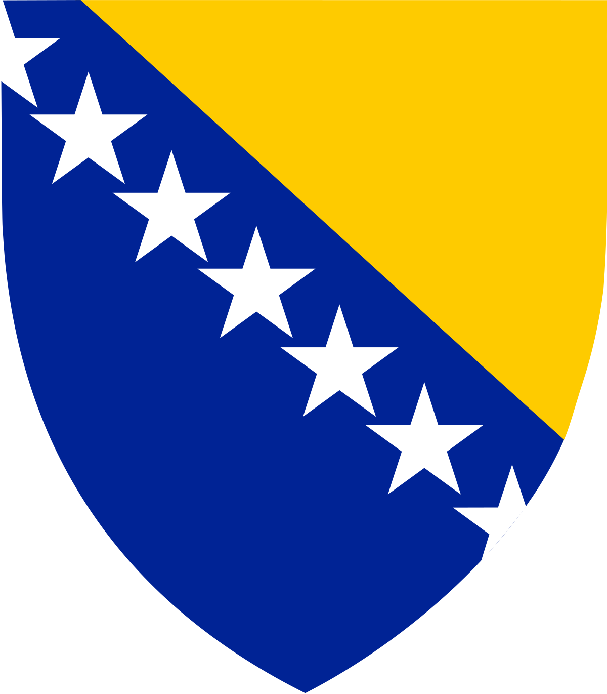

Obecné údaje
Bosna a Hercegovina (BaH) je někdy zvaná jednoduše Bosna. BaH je přímořská země v jihovýchodní Evropě, na Balkánském poloostrově. Jejím hlavním a zároveň největším městem je Sarajevo se skoro 300 000 obyvateli. Bosna hraničí na severu, západě a jihu s Chorvatskem, na východě se Srbskem a na jihovýchodě s Černou Horou. Bosna a Hercegovina je téměř vnitrozemský stát, s výjimkou pásu 20 km na pobřeží Jaderského moře.
Bosna a Hercegovina není v EU, ale je potenciální kandidátskou zemí pro vstup do EU.
Politika
Bosna a Hercegovina se skládá ze dvou entit – Federace Bosny a Hercegoviny a Republika srbská. Distrikt Brčko, je napůl srbský a federativní.
V čele země de facto stojí Vysoký představitel pro Bosnu a Hercegovinu, který je volený Radou pro implementaci míru. Nejvyšším správním orgánem země je Předsednictvo Bosny a Hercegoviny neboli Prezídium (Predsjedništvo). To má tři členy (Bosňáka, Srba a Chorvata), kteří jsou do funkce voleni každé 4 roky.
Zákonodárným orgánem je Parlament Bosny a Hercegoviny (Parlamentarna skupština), který má dvě komory: Sněmovnu národů (Dom naroda) a Poslaneckou sněmovnu (Predstavnički/Zastupnički dom). Sněmovna národů se skládá z 15 delegátů. Poslanecká sněmovna se skládá ze 42 členů, kteří jsou ze dvou třetin voleni ve Federací BaH a z jedné třetiny v Republice srbské.
Historie
Bosna a Hercegovina má zajímavou a bohatou historii. Checete se dozvědět o dějinách této rozbouřené a nejednotné země více? Pak následujte tento odkaz a objevte spletitou a náročnou cestu tamějších obyvatel napříč věky.


Poloha a geografické údaje
BaH se skládá ze dvou geografických a historických oblastí: větší Bosny (cca 42 000 km2) a menší Hercegoviny na jihu. Bosna je velice hornatá země, totéž platí i o Hercegovině (cca 9 000 km2). Na severu se horské oblasti přeměňují v nížinaté Posáví, resp. v Panonskou nížinu. Dinárské části Bosny se táhnou od západu na východ. Hercegovina se skládá ze dvou částí: horské (vysoké) a jadranské (nízké) Hercegoviny, která se dotýká Jadranského moře.

Nejvyšším vrcholem Bosny a Hercegoviny je hora Maglić (2 386 m n. m.), která se nachází na jihovýchodě země.
Významná jsou rovněž tzv. polje, rozsáhlejší horská údolí, která se objevují při povodí bosenských řek (Uny, Vrbasu, Bosny, Driny),
Dalšími velkými městy jsou: Banja Luka (185 042), Tuzla (110 979), Zenica (110 663), Bijeljina (107 715), Mostar (105 797) Brčko a Travnik.
Státní znaky
Vlajka Bosny a Hercegoviny má velmi nezvyklý tvar. Pravá část vlajky je tvořena svislým modrým pruhem a část středová žlutým pravoúhlým trojúhelníkem, k jehož přeponě přiléhá sedm celých a dvě poloviční bílé pěticípé hvězdy. Žerďová část je vyplněna modrou barvou. Modrá barva má spolu s bílými hvězdami připomínat členství Bosny a Hercegoviny v Radě Evropy. Vrcholy trojúhelníka zastupují tři národy - Chorvaty, Srby a Bosence. Modrá, bílá i žlutá barva použité na vlajce jsou tradičně spojovány s mírem a neutralitou.
Státní vlajka

Státní znak
Obyvatelstvo
Dnes země udržuje vysokou gramotnost, má dlouhou očekávanou délku života a vysokou úroveň vzdělání a je jednou z nejčastěji navštěvovaných zemí v regionu. Bosna a Hercegovina je regionálně a mezinárodně známá svou přírodní krásou a kulturním, svou kuchyní, zimními sporty, různorodou a jedinečnou hudbou, architekturou a festivaly. Bez ohledu na etnicitu je každý občan Bosny a Hercegoviny v češtině považován za Bosňana.
Ekonomika
Bosna a Hercegovina patří po ekonomické stránce k nejzaostalejším zemím evropského kontinentu. Je zde stále znemožněno rozvíjet zemědělství, jelikož v půdě zůstalo přes 4000 dosud neobjevených min z doby první a druhé světové války. Najdeme i celá minová pole v oblasti fronty a nejvíce postiženo je hlavní město Sarajevo, které bylo obléháno.
(kde byl mj. roku 1914 spáchán atentát na Františka Ferdinanda d'Este, následníka Rakousko-Uherského trůnu, čímž začala První světová válka)
Z tohoto důvodu nelze v zemi rozvíjet ani cestovní ruch, který by přinesl tolik potřebné finanční prostředky pro obnovu státu.
Měna
100 Konvertibilních marek

Konvertibilní marka. Jak již název napovídá, jedná se zde o konverzi vůči marce, a to marce německé. Byla zavedena roku 1998 a tehdy se jednalo o kurz 1:1. Ale copak se stane s konvertibilní markou, když marka zanikne? Zkrátka se konvertuje na euro. Od roku 2002 je pevným kurzem řekněme dvě marky za jedno euro.
1 konvertibilní marka je tvořena 100 feniky.
Obrať minci přejetím kurzoru!